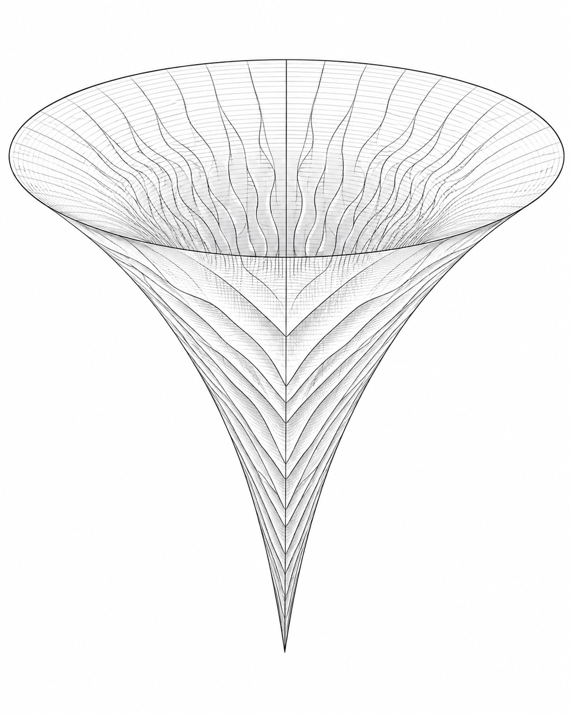

Theoretical Physics
Hiroki Matsui
Quantum Gravity & Cosmology · OCAMI, Osaka Metropolitan University
Research
One of the central challenges in modern physics is reconciling general relativity with quantum mechanics. My research lies at the intersection of quantum gravity and cosmology, focusing particularly on the origin of the universe and the quantum nature of gravity. Instead of presupposing a complete theory, I aim to reveal the fundamental properties of quantum gravity using complementary approaches, such as effective field theory, swampland conjectures, modified theories of gravity and quantum cosmology.
Recently, I have been using gravitational path integrals as practical computational tools to study the wave function of the universe and its quantum creation. By applying Picard–Lefschetz theory and resurgence to the Lorentzian path integral, I can identify the relevant saddle points and integration contours in quantum cosmology. Another related issue is how a smooth, homogeneous and isotropic classical universe can emerge from an underlying quantum state.
My work also covers gravitational theories beyond general relativity, including Hořava–Lifshitz and Jackiw–Teitelboim gravities. The latter is an analytically tractable model of two-dimensional gravity. These frameworks enable me to examine the wave function of the universe, its boundary conditions, functional determinants and the interior structure of black holes. Through this work, I am exploring whether quantum gravitational effects could resolve or avoid cosmological and black hole singularities.
Another central aim of my research is to establish a connection between quantum gravity and observation and experimentation. My investigations focus on squeezed states and higher-order correlations in primordial gravitational waves, graviton-induced quantum decoherence and light-cone smearing caused by spacetime fluctuations. My goal is to identify observable signatures of the quantum nature of spacetime in future cosmological observations and quantum experiments.

Recent publications
Preprints
-
2026 arXiv:2607.20867
-
2026 arXiv:2603.19819
2026
-
Phys. Rev. D 114, 045028 arXiv:2605.05916
-
Phys. Rev. D 113, 066003 arXiv:2512.21549
-
Phys. Rev. D 113, 026017 arXiv:2510.13175
2025
-
Phys. Rev. D 111, 126022 arXiv:2412.20398
-
Phys. Rev. D 111, 104077 arXiv:2412.19514
2024
-
Phys. Rev. D 110, 023503 arXiv:2404.18609
-
Phys. Rev. D 110, 083508 arXiv:2402.09981
Contact
Address
Osaka Central Advanced Mathematical Institute (OCAMI)
Osaka Metropolitan University
3-3-138 Sugimoto, Sumiyoshi
Osaka 558-8585, Japan
hiroki-address@example.ac.jp
Office
+81 (0)6 ####-####